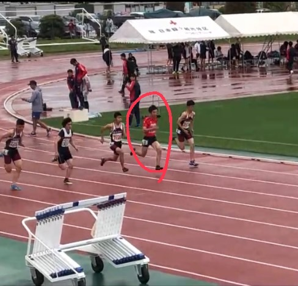

このサイトについて
こんにちは。ご覧いただきありがとうございます。
私は東京理科大学 創域理工学部 情報計算科学科 3年の服部航大と申します。
このサイトでは、私のこれまでの経験やプログラミングスキル、プログラミングで作成した制作物について紹介します。
以下に私の写真を示します。1枚目が成人式、2枚目は高校の修学旅行の際に撮影した写真です。
学歴
- 2018/4高等学校
- 私立流通経済大学付属柏高等学校 入学
- 2021/3高等学校
- 私立流通経済大学付属柏高等学校 卒業
- 2021/4大学
- 東京理科大学 理工学部情報科学科 入学
- 2025/3大学
- 東京理科大学 創域理工学部情報計算科学科 卒業見込み
資格・免許
- 2022/9
- 普通自動車第一種運転免許
- 2023/4
- ITパスポート試験
- 2023/10
- 基本情報技術者試験
私のこれまでの経験
中学生
中学1年生の頃は勉強が得意で、1年間常に定期テストで学年10位以内に入っていた。
しかし、ゲームが大好きであった私はゲーム三昧の日々が続き、段々と勉強が追い付かなくなり順位が20位台まで落ちる。
卓球の部活動でも真剣に取り組むことができず、強くなることができなかった。そして高校受験でも第1志望の高校に落ちてしまう。
この2つに大きな後悔が残る。
高校生
部活動：
中学での後悔を繰り返さないため、私は文武両道になることを目指した。そして部活動では強化部であった陸上部に入り、勉強面では特進クラスに進学した。
入部当初は100m13秒ほどだったが、高い目標を持って真剣に部活動に取り組むため、陸上部では経験者でも難しいとされる、100mを11秒台で走ることを目標とした。
私は目標達成に向けて、初めは走りの基礎や筋肉を重点的に鍛えた。そして毎日の走り込みに取り組んでいる中で私の武器は加速であることに気づき、この武器を伸ばすために走り始めを特に意識して努力を続けた。
しかし、タイムを伸ばしていく中でスタートダッシュ後の姿勢という課題に直面し、タイムの更新が12秒2までで頭打ちになってしまった。
また、顧問に指摘された課題点を理解して修正することができずに苦労していた。
この課題に対しては、同期にスタートダッシュの姿勢の動画撮影を依頼し、フォームの改善に取り組んだ。
これにより、客観的な視点から走りを見直すことができ、課題であったスタートの姿勢を改善することができた。その結果、私は高校2年生の冬の大会で11秒9というタイムを記録できた。
この目標の達成には同期の存在が無ければ達成し得なかったと思っている。
練習が辛く、同期や先輩後輩が何人かやめていってしまう時期もあり、私もやめるか迷ってしまった時もあったが、残った同期とともに必死に食らいついた。
練習時はライバルとしてタイムを競い合い、練習後の時間には同期でウイニングイレブンをすることで疲れを吹き飛ばすことができていた。
以下は実際に大会に出場し、100m走を行った際の動画を示す。奥から2人目の赤いユニフォームを着ているのが私である。

勉強：
高校2年生の冬までは授業と部活動が忙しく、家ではあまり勉強に時間を費やすことができなかった。
また、私は私立理系大学の東京理科大学を目指していたため、英語と数学、物理を受験科目で用いる予定であったが、学校のカリキュラムでは数学3と物理が高校3年の11月頃に授業範囲が終わるとのことで、大変焦っていた。
しかしそんなとき、高校2年生の冬から春にかけて、新型コロナウイルスによって2ヵ月ほど学校が延期となった時期があった。
私はこの休みを最大のチャンスと捉え、数学3と物理の参考書をそれぞれ2冊ほど購入し、参考書を用いて毎日10時間の勉強を行った。
これにより、私は休み明けの5月頃には数学3と物理の基礎を終え、8月から過去問を解き始めることができていた。
その後も大好きなゲームを封印して毎日10時間の勉強を受験日まで休むことなく継続し、第1志望であった東京理科大学に合格することができた。
大学生
私は大学からJavaやC言語からプログラミングを始めたことをきっかけに、自分の考えを自由に表現することができるプログラミングの楽しさを実感した。
そして、大学1年生の冬頃からpythonやGo言語などの新しい言語の独学を始めた。その中で、Javaでのゲーム作成やPythonでのDiscordbot作成を行い、これらを友人に披露して喜びを貰ったり、楽しそうにしていたところを見てやりがいを感じたため、プログラミングを仕事にして人に喜びを届けたいと考えるようになった。
大学3年生の夏ごろにはいくつかの簡単な制作物を作れるようになったため、開発インターンシップに挑戦し、実際の開発経験やweb開発手法を学ぶことができた。
その後、私は簡単な開発ばかりで、2つ以上の技術を使った開発を行っていないことに気づいたため、インターンシップで学んだことをもとにFlaskフレームワークを用いたwebアプリ開発に挑戦を始めた。
この開発を完成させたことで自分の可能性や視野がさらに広がり、機械学習や画像処理に興味を持ち、その他のwebアプリ開発に挑戦するようになった。
この可能性の広がりによって、今後の研究では陸上選手の姿勢推定を行い、走り方の課題を可視化し、改善をサポートする開発を行いたいと考えるようになった。
そして近頃ではこの姿勢推定技術の学習のため、mediapipeを用いた歩行判定プログラムの開発を行っている。
また、私は好奇心旺盛な性格で、3DCGソフトのBlenderやIT資格、ネットワークやデータサイエンスなどたくさんの勉強に興味を持って自主的に学習を行っている。
プログラミングも3年間毎日欠かさず行っており、現在は10言語ほどに加えて、複数の技術の基礎知識を有するまでに成長することができた。
以下はある企業のインターンシップの最終日にチームメンバーと撮影した写真である。